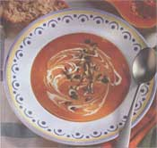

NATURAL KITCHEN
MOTHER'S KITCHEN
The old reliable soup may be a favorite in the fall, but there's lots more to do with the season's many kinds of squash.
With a burst of fall color and frost on the pumpkins, the Vassal household buttons down for fall. Charlie Brown will once again await the arrival of the "Great Pumpkin" and children will be carving their large orange prey and roasting the seeds. I'll be taking the annual bus ride with young students to a rural pumpkin patch to discover that, yup, pumpkins really do grow on large vines. And anyone with a garden filled with squash under those vines will be looking for creative ways to get rid of them other than carving them for Halloween. Fortunately, the versatile winter squash can be used in stews, soups, breads, muffins, pancakes, and - of course - pies. Most squash will keep in a cool place for months so there's no hurry to bake those pies yet. Cooked, pureed, and poured into plastic containers, the squash stores well in the freezer. The nutritious squash contains the cancer-preventing beta-carotene (which converts into vitamin A), potassium, fiber, and no fat. So don't let that 5-pound pumpkin intimidate you. Go ahead and bake it, but don't forget to save those pumpkin seeds for nutritious nibbling.
Selecting and Storing Winter Squash
Look for firm, heavy squash without moldy spots or cracks. The rind should be dull; shininess means it's immature. Check to see that the stem isn't collapsed, moist, or blackened. Most squash can be stored in a cool place such as a garage or root cellar where the temperature is between 45° and 60°F for three to four months. Pumpkin and spaghetti squash will keep for 1 to 2 months. If the temperature is below 45°F (such as in a refrigerator) or above 60°F, it will cause the squash to deteriorate more rapidly. A cut squash can be wrapped in plastic wrap and refrigerated for about a week.
Varieties
Pumpkin - Large jack-o'-lantern varieties are usually too stringy to eat. A smaller, sweeter variety, such as sugar pumpkins, are better for pies and baking. Most people use canned pumpkin for pies, which is convenient but not as flavorful or nutritious.
Acorn - A small squash with dark green, ribbed skin, it gets its name from its acorn shape. The flesh is yellow to light orange with a mild flavor.
Buttercup - A turbanlike shape at the blossom end and faint stripes on its dark green surface identify this squash. The orange flesh is drier and more flavorful than other squash, which makes it my favorite for baking and eating.
Butternut - Not to be confused with buttercup, it has a tan exterior with a bulb-like base. The flesh is orange, moist, and milder tasting than the buttercup. Both of these varieties can be used instead of pumpkin for pumpkin pies.
Spaghetti squash - This yellow squash (which is really a gourd) is oval shaped and, when cooked, has spaghettilike strands. It has a mild taste and a crisp texture.
Kabocha - Similar in appearance to the buttercup squash, it has a rich, sweet flesh.
Turban - A larger, drum-shaped squash with a green and orange skin, it gets its name from its turban-shaped end. It makes a great table decoration but is lacking in flavor.
Preparation
Baking: This is my favorite method because baking brings out the sweetness by caramelizing some of its sugars and best preserves the beta-carotene. Cut the squash lengthwise and scrape out the seeds with a spoon, brush the cut side with oil or butter, and place cut side down on a foil-lined cookie sheet. For a moister squash, omit the oil and pour inch of water in the pan. The squash halves can also be baked wrapped in foil. Bake in a 350–375°F oven for about an hour or until the squash can be pierced easily with a knife.
Steaming: Place the seeded squash halves cut side down in a vegetable steamer over 1 inch of water or use peeled and cut cubes of squash. Cover and simmer for about 20–25 minutes, with less time needed for the cubes. Since this method produces a moister squash, use less liquid than is called for in recipes for baked goods.
Microwaving: Never microwave a whole squash because despite what you may have heard, I can assure you that they can explode. Arrange seeded squash halves cut side down in a microwave-safe dish (glass pie pan) with 1/4-inch water. Pierce the skin in a few places with a knife. Microwave on high for 5 minutes, then move or rotate the squash. Microwave for at least 5 more minutes until soft in the center. Let sit for 5 to 10 minutes before serving.
Even if you've never cared for squash soup, try this one. It's so delicious that it's worth the trouble.
Roasted vegetables:
1 teaspoon olive oil
2 large carrots (1 cup) - cut into 1/2-inch circles
1 large onion - peeled and quartered
2 large cloves garlic - peeled
2 medium-sized yellow squashes (1 use buttercup) - cut into eighths, seeds removed. You should have about 4 cups of squash.
Preheat oven to 350°F. In a soup pot, toss the carrots, onion, and garlic together with the oil. Put the vegetable and squash slices on a large cookie sheet covered with foil. Bake about 30 minutes until soft and lightly browned. Scrape squash from its shell.
Soup broth:
1 teaspoon toasted whole cumin seeds*
2 cups unsalted chicken broth
1/2 teaspoon salt
freshly ground pepper
1/8–1/4 teaspoon cayenne pepper
1 tablespoon brown sugar
1/2 teaspoon allspice
1/2 teaspoon cinnamon
2 cups water
1/4 cup cream
3/4 cup low fat milk
optional topping: toasted, husked pumpkin seeds
In a blender or food processor puree the vegetables and all the soup ingredients in two batches until smooth. Pour into the soup pot and simmer until hot. Add more cayenne or salt if needed. If too thick, add more water. Sauté the pumpkin seeds in a little butter or oil. Serve the soup with a few seeds on top.
*In a dry skillet, heat the seeds on medium-high heat, jiggling the pan for a minute or so until fragrant.
2 large acorn squashes - sliced across into 1/2–3/4-inch slices
1 tablespoon butter
1/2 teaspoon ginger
1/2 teaspoon nutmeg
1/4 teaspoon allspice
dash cayenne pepper
2 tablespoons apple cider
2 tablespoons real maple syrup
Preheat oven to 350°F. Line a large cookie sheet with foil. Lay out the squash rings so they're not overlapping. In a glass measuring cup (or saucepan on the stove) melt the butter with the rest of the ingredients in the microwave just until it starts to bubble (about 60–90 seconds). Brush or pour mixture onto the squash. Bake for 30 minutes, remove, and turn the rings over. Bake another 20–25 minutes until done.
Since I'm not crazy about cold squash, I serve this salad at room temperature. It needs to be stored in the refrigerator so I warm any leftover salad in the microwave for about 30 seconds before serving.
2 baked acorn squashes (see above recipe) - skin removed and cut into 1/2-inch pieces
2 cups cooked wild rice or Wehani* rice
1/2 poblano pepper or red bell pepper - seeded and cut into thin strips
1/2 cup parsley or cilantro - minced
Dressing:
1 teaspoon balsamic or red wine vinegar
1 tablespoon olive oil
1/4 cup orange juice - freshly squeezed or store bought
1/2 teaspoon sugar
1/4 teaspoon salt
1/8 teaspoon cayenne pepper
freshly ground pepper
Bake the squash and prepare the rice. Whisk together the vinegar, oil, orange juice, sugar, salt, and pepper. Pour over the salad and toss. Serve immediately.
*Made by Lundberg Farms and less expensive than wild rice. To prepare wild rice: Put on 1 1/2 cups water to boil. Rinse 1 cup rice and add to boiling water. Simmer covered for 35–40 minutes until done. (I like it a little chewy.)
1 large spaghetti squash - cut in half crosswise, seeds scraped out with a spoon
2 tablespoons packaged pumpkin seeds - toasted
1 teaspoon mild oil
2 large cloves garlic - peeled and smashed
1/4 cup yellow onion - coarsely chopped
1/2 teaspoon cumin
1/2 cup chicken broth
1 dried ancho chile - stem and core removed and cut with scissors into 3 pieces*
1 cup canned tomatoes in a little juice - coarsely chopped
1/2 teaspoon unsweetened cocoa powder
1 teaspoon brown sugar
pinch cinnamon
pinch allspice
fresh cilantro or parsley - chopped
Mexican crumbling cheese or Muenster
Squash: Preheat the oven to 375°F. Place the squash halves cut side down on a foil-lined cookie sheet. Stab the squash in a few places with a knife. Bake about 1 hour until the strands are tender and pull away easily. To save time, microwave both squash halves cut side down for 10-15 minutes, rotating every 5 minutes. When it's done, let it sit for a few minutes, then gently pull the strands loose with a fork. Fluff up the squash on a plate.
Sauce: In a large skillet toast the pumpkin seeds on medium-high heat for about 2 minutes, shaking the pan constantly. Pour into a bowl and set aside. Put the oil in the hot pan, add the garlic and onions. Sauté on medium-high heat until lightly browned, stirring occasionally. Stir in the cumin for a few seconds, then add the broth, ancho chiles, tomatoes, and spices. Reduce heat and simmer uncovered for 20 minutes. Pour into a blender with the toasted seeds and blend well. Add salt and freshly ground pepper to taste. The sauce should be the consistency of marinara sauce. If it's too thick, add additional chicken broth. Crumble the Mexican cheese by hand, or put chilled cubes of Muenster cheese in a food processor until it becomes crumbs. Spoon the sauce over the squash and sprinkle with cheese and cilantro.
*Can be purchased at Mexican or South American groceries.
Use a strong-tasting squash for these low-fat muffins. Make a double batch because they freeze well.
1 egg
1/2 cup low fat milk
1 cup cooked, pureed fresh pumpkin or squash (I use buttercup squash)
2 tablespoons canola (or any mild) oil
1/4 cup brown sugar
1 tablespoon maple syrup
1 teaspoon cinnamon
1/2 teaspoon ground ginger
1/4 teaspoon allspice
1 cup oat bran
1 cup sifted whole wheat pastry flour
2 teaspoons baking powder
1/2 cup currants or mini chocolate or carob chips (for a dessert muffin)
Preheat oven to 375°F. Line a muffin pan with 12 paper liners. Using an electric mixer beat together the egg, squash, and oil. Add the sugar, maple syrup, spices, and oat bran. Beat well. Briefly mix in the flour and baking powder until just mixed. Stir in the currants or mini chips. Bake for 20 minutes, just until lightly browned on top (or inserted toothpick comes out clean). Cool on a rack.
A nonsquash recipe but a recent favorite of mine: While basil is plentiful in the garden, whip up this low-fat spread to put on a vegetable sandwich or bagel. You need to prepare the yogurt the night before.
1 1/2 cups nonfat/low-fat plain yogurt
2 large cloves garlic
1 tablespoon pine nuts or walnuts - toasted
1 cup basil leaves - packed
1/4 teaspoon salt
dash cayenne pepper
1 teaspoon extra virgin olive oil
1 tablespoon lemon juice
1 tablespoon freshly grated Pecorino Romano or Parmesan cheese
3 ounces low fat cream cheese
The night before : pour the yogurt into a non-terry cloth dish towel and place in a colander. Put the colander in the sink and let drain until morning. It should be thick and not watery. Chill until ready to use.
Toast the nuts in a dry skillet for a minute or so. In a food processor (or by hand) chop the garlic, nuts, and basil leaves. Add the salt, pepper, olive oil, and lemon juice. Pulse a few times, then add the Romano and cream cheese. Blend. Pulse in the yogurt cheese briefly (don't over mix). Chill in a plastic container a few hours before serving so it will thicken.
|
Mother staffer Sunny Edmunds takes control of a pumpkin/squash muffin. |
|
 |